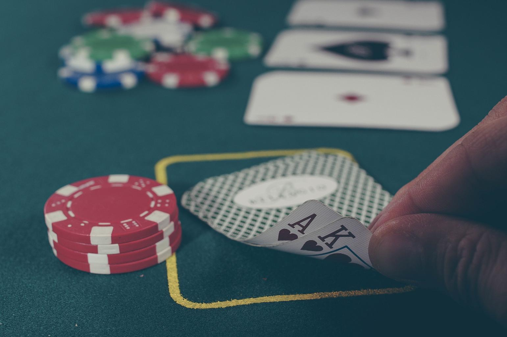
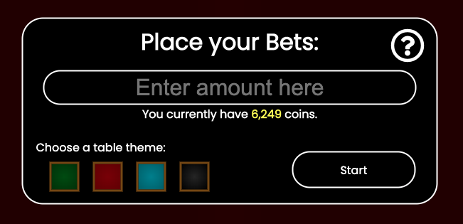
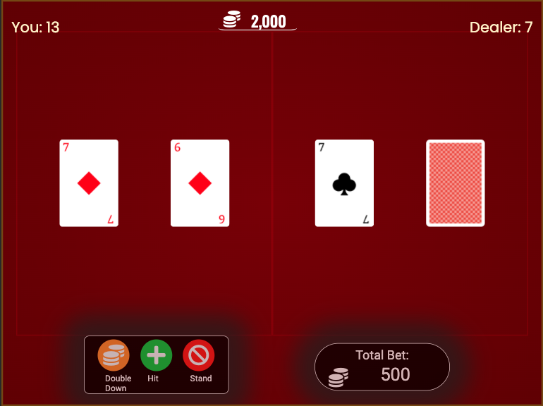
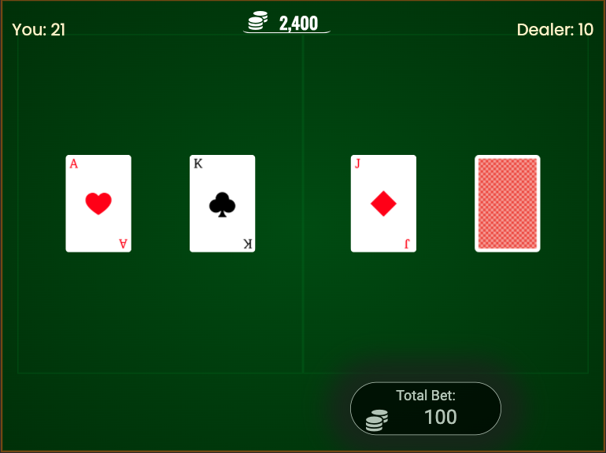
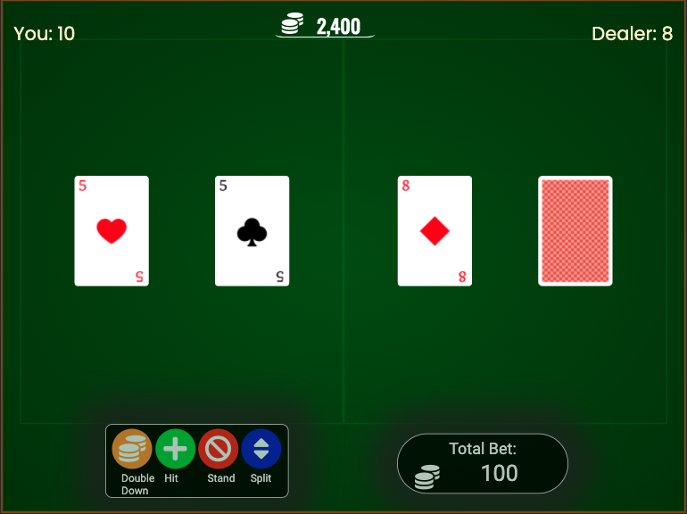
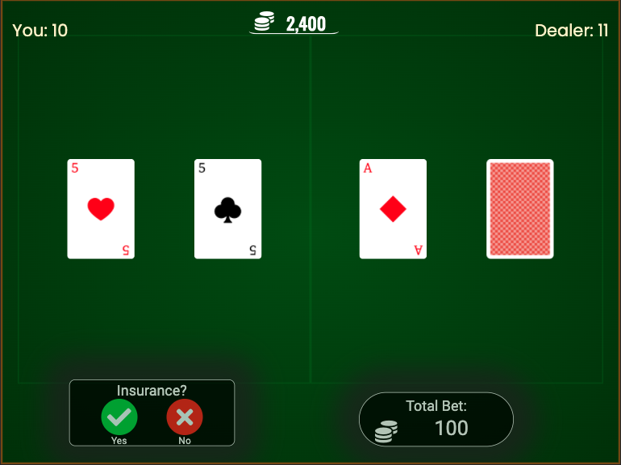

How to play Blackjack
Aside from poker, blackjack is the most
popular card game at casinos. The
objective of the game is to beat the dealer by getting your hand count as close to 21 as possible without
going over 21.
The Deck
The classic 52-card deck is used; but depending on the casino, you'll work with anywhere
between 1 and 8 decks. (NOTE: In this version of the game, you'll always be using 3
decks).
Card values
Aces can be worth 1 or 11, face cards (king, queen & jack) are worth 10, and the value of
numbered cards equals the number shown on the card. (For example, a hand containing a
jack card and a 5 card would equal 15).
Coins & Betting
Before the game can start, you will need to place an amount of coins that you would like
to bet. You can also choose a table theme by clicking/tapping on 1 of the 4 icons on the bottom-left of the
popup. When you're ready to play, click start!
NOTE: At the end of each round, your total amount of coins will be saved, unless the
total is 2500 or less in which it will be saved as 2500.
The Initial Deal
One you place your bet, the dealer will give you and itself 2 cards. The catch is that
the dealer's 2nd card is face down.
Naturals/Blackjack
If the first 2 cards in your hand are an ace and a "ten card" (a Jack, Queen, King, or a
10), this is known as a "natural" or a "blackjack". If you have a natural but the dealer does not, you will
immediately win 1.5 times your bet!
NOTE: If you and the dealer both have a natural (or any time when you and the dealer end
up the same hand value after the dealer's turn), this is known as a "push", and all your bets will be
returned.
Gameplay
After the initial cards have been dealt and if the player doesn't have a natural, the
game will continue normally and a command menu will appear on the bottom-left corner of the screen where you
can click/tap on one of the buttons to decide what you want to do with your hand. You must decide whether you
want to "hit" (receive a card from the deck in an attempt to get closer to a hand value of 21, or even hit 21
exactly; green button) or "stand" (not receive any more cards for the current round and end your turn; red
button). After you stand, if you end up with a value closer to 21 than the dealer, you will win double your
bet!
NOTE: You can keep "hitting" until you decide to stand (if you hand value is less than
21), or until you "bust" (ending up going over 21, in which case you've lost the round and the dealer
collects all of your bets.
Soft hands
Since ace cards can equal 1 or 11, the combination of an ace with any card other than a ten-card is known as a
"soft hand". For example, a hand containing a 4 and an ace is a soft hand since the hand can equal either 5 or
15. If receiving a new card causes your hand to bust by counting the ace as 11, it will be counted as 1
instead. This allows you to continue playing by standing or "hitting".
Doubling Down
Along with being able to hit and stand, another option you have is to double down (orange button). Here, you
place an additional bet equal to your original bet and receive just 1 card. After that, you must stand, and
the dealer begins its turn.
Splitting Pairs

If the first 2 cards in your hand show the same value (for example two 7s or two face cards) you will also
have the option split your hand (blue button). Here, you place an additional bet equal to your original bet
and the cards are treated as 2 separate hands (therefore, 1 bet for each hand, equal amount). The hand to the
left is played first and then you must hit or stand. Only after you stand or "bust" does your next hand get
played.
The Dealer's Turn
After you stand or bust, the dealer's 2nd card is revealed. If it's total hand-value is 17 or greater, it must
stand. Otherwise, it continues drawing cards until a total of 17 or greater is reached, in which case it
stands.
NOTE: If the dealer has an ace and counting it as 11 would bring the total hand-value to 17 or more (but not
more than 21), it must stand.
Insurance

If the dealer's face-up card is an Ace, you will be given the option to place a side bet of up to half your
original bet, hoping that the dealer's 2nd card is a ten card, and thus a natural for the dealer. If the
dealer's 2nd card is a ten-card, you'll lose the main bet, but will win double the amount of your side bet.
NOTE: Taking insurance is usually not recommended, unless you're certain there's a large
amount of ten-cards still in the deck.